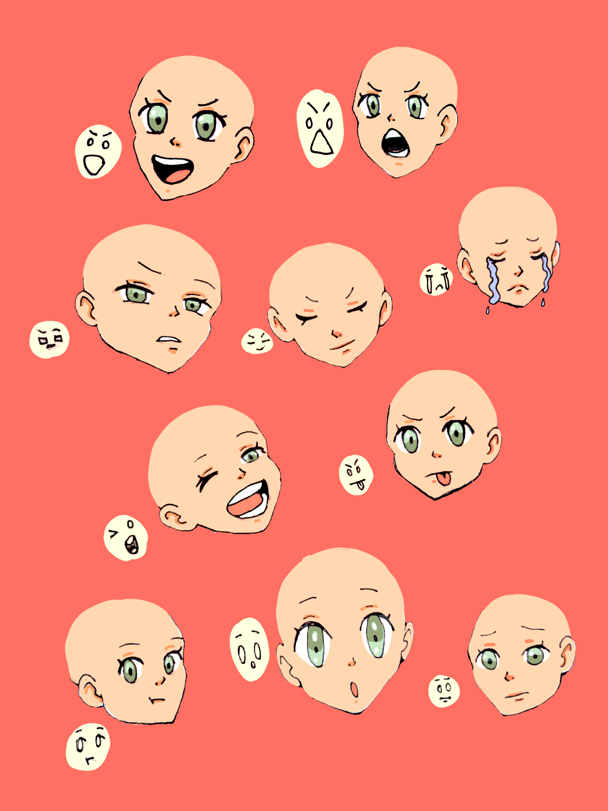
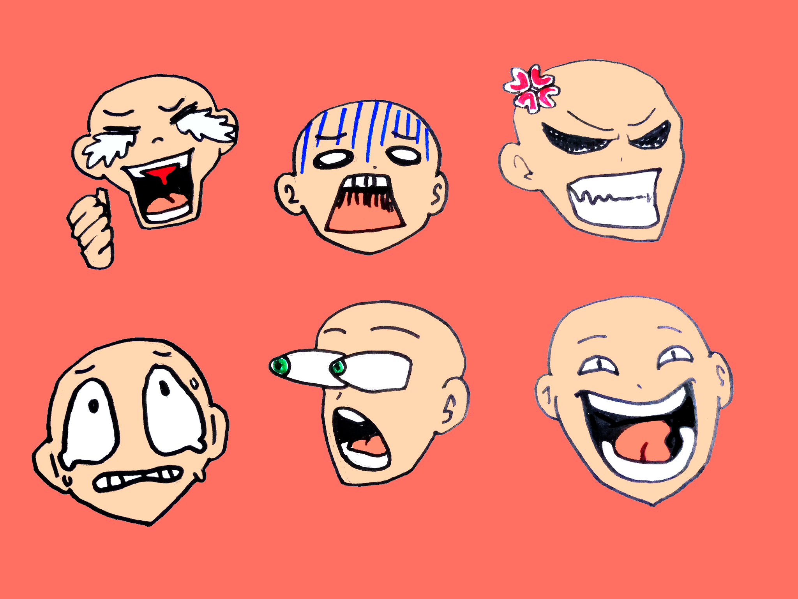
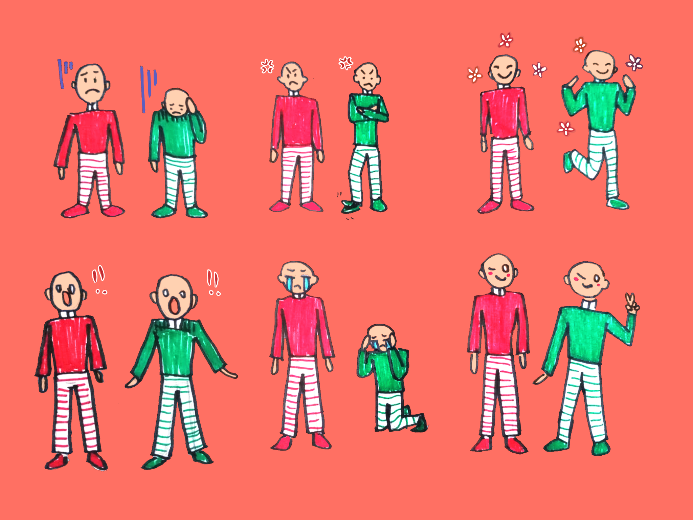
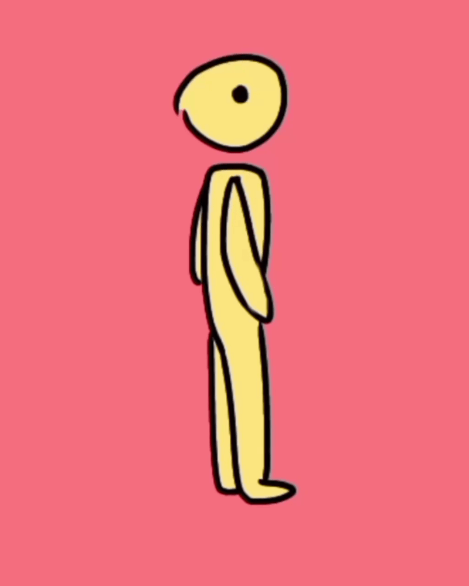

Diseño Multimedial
Tu primer
Tu primer
trazo
Un espacio pensado para estudiantes que están comenzando Diseño Multimedial y quieren reforzar sus conocimientos de dibujo, animación y diseño.
Empezar a aprender →
Aprendé a tu ritmo
¿Qué querés aprender?
Elegí un área para explorar sus artículos y ejercicios.
Animación
Diseño
01 · Dibujo
Aprender a dibujar
Herramientas
Programas para dibujar y diseñar
Conocé herramientas digitales para hacer bocetos, ilustraciones y piezas visuales. Elegí según tu dispositivo, tus objetivos y tu forma de trabajar.
Ver másVer menos
- Interfaz y herramientas básicas.
- Lienzo, pinceles, capas y exportación.
- Cómo elegir un programa para empezar.
Seguir aprendiendo después de esto:
Expresión
Dibujo de expresiones
Las cejas, los ojos, la boca y la inclinación de la cabeza ayudan a comunicar emociones y personalidad.
Ver más informaciónVer menos
1. Rasgos principales
- Cejas y mirada: Definen la intensidad (enojo, sorpresa, duda).
- Boca y comisuras: Marcan si la emoción es positiva o negativa.
- Inclinación de cabeza: Acompaña la actitud (sumisión, desafío).
2. Músculos y pliegues clave
Al exagerar una expresión, la piel se comprime generando arrugas características:
- Entrecejo (Corrugador): Pliegues verticales en enojo o concentración.
- Pómulos y ojos (Orbicular): Arrugas en los extremos al sonreír de forma genuina.
- Frente: Líneas horizontales al elevar las cejas por sorpresa o miedo.
3. Referencias visuales (Hacé clic para ampliar)



Seguir aprendiendo después de esto:
Proporción
Figura humana
Aprendé a construir el cuerpo a partir de formas simples antes de agregar detalles.
Ver másVer menos
- Usá líneas de acción para marcar la pose.
- Bloqueá torso, pelvis y extremidades con formas básicas.
- Observá proporciones sin buscar una única regla rígida.
Seguir aprendiendo después de esto:
Técnica
Bocetado rápido (Gesture drawing)
Entrená la fluidez y soltura de tus trazos capturando la energía de una pose en segundos.
Ver másVer menos
- Sesiones cronometradas de 30 segundos a 2 minutos.
- Enfocate en la línea de acción antes que en el contorno.
- Reducí el miedo al papel en blanco soltando la mano.
Seguir aprendiendo después de esto:
Anatomía
Anatomía de manos
Descubrí cómo simplificar la estructura de las manos, entender las articulaciones y nivelar la complejidad según el estilo de tu personaje.
Ver másVer menos
- Manos por nivel de complejidad (caricatura vs. realista).
- Estructura de metacarpianos y falanges.
- Esquemas simplificados y ejercicios prácticos de construcción.
Seguir aprendiendo después de esto:
Volumen
Luz y sombra
Aprendé a dar volumen y profundidad tridimensional a tus dibujos identificando la fuente de luz.
Ver másVer menos
- Identificación de luz propia, sombra propia y sombra proyectada.
- Escala de grises y penumbra.
- Construcción del volumen en cuerpos geométricos básicos.
Color
Teoría del color
Comprendé cómo se relacionan los colores y cómo usarlos para crear contraste, armonía y una intención visual.
Ver másVer menos
- Tono, saturación y valor.
- Colores complementarios y análogos.
- Paletas limitadas para mantener unidad.
02 · Animación
Dar vida al dibujo
Planificación
Storyboards
Un storyboard organiza una escena en viñetas para anticipar qué sucede y cómo lo verá el público.
Ver másVer menos
- Separá la acción en momentos clave.
- Indicá encuadres, movimientos y dirección de la mirada.
- Priorizá la claridad antes que los detalles.
Fundamentos
Principios de animación
Explorá recursos que ayudan a que el movimiento se sienta claro, expresivo y convincente.
Ver másVer menos
- Estiramiento y compresión.
- Anticipación y puesta en escena.
- Aceleración, desaceleración y arcos.
Ritmo
Timing y Spacing
Comprendé la diferencia entre la cantidad de dibujos (tiempo) y la distancia entre ellos (espacio) para simular peso.
Ver másVer menos
- Definición de Timing: duración temporal de una acción.
- Definición de Spacing: aceleración y desaceleración física.
- Cómo simular objetos pesados vs. livianos.
Ejercicio
Caminata
Construí un ciclo de caminata observando cómo alternan las piernas y cómo responde el resto del cuerpo.
Ver másVer menos
- Marcá contacto, descenso, paso y elevación.
- Coordiná brazos y piernas.
- Revisá que el personaje no se deslice por el suelo.
Referencia animada (Hacé clic para ampliar)

Ejercicio
Ojo
Animá un parpadeo observando cómo el párpado se cierra y vuelve a abrirse.
Ver másVer menos
- Dibujá el ojo abierto, entrecerrado y cerrado.
- Cerrá el párpado rápido y abrilo un poco más despacio.
- Mantené la forma y la posición del ojo entre fotogramas.
Referencia animada (Hacé clic para ampliar)
Ejercicio
Rebote
Dale peso a una pelota combinando caída, contacto con el suelo y elevación.
Ver másVer menos
- Separá más las posiciones durante la caída para mostrar aceleración.
- Comprimí la pelota al tocar el suelo y estirala al despegar.
- Acercá los dibujos en la parte más alta del rebote.
Referencia animada (Hacé clic para ampliar)
03 · Diseño
Comunicar visualmente
Texto
Tipografías
La tipografía influye en el tono y la legibilidad de una pieza. Elegí familias que acompañen el mensaje.
Ver másVer menos
- Diferenciá serif, sans serif y display.
- Combiná pocas familias con funciones claras.
- Revisá tamaño, interlineado y contraste.
Organización
Composiciones
Organizá los elementos para guiar la mirada y establecer una jerarquía visual.
Ver másVer menos
- Definí un punto focal.
- Usá escala, alineación, contraste y espacio negativo.
- Probá distintas distribuciones antes de decidir.
Referencias
Moodboard
Reuní referencias visuales para definir la atmósfera, la paleta y el lenguaje de un proyecto.
Ver másVer menos
- Buscá imágenes, colores, texturas y tipografías.
- Elegí referencias que respondan al mismo objetivo.
- Agregá palabras clave para explicar la dirección visual.
Machetes de Trabajo
Fichas Resumen (Cheatsheets)
Consulta rápida de datos técnicos útiles mientras trabajás en tu computadora.
Atajos Rápido
Atajos Universales
- B Pincel / Brush
- E Goma de borrar / Eraser
- V Seleccionar / Mover
- Z + Drag: Zoom dinámico
Formatos
Resoluciones & Formatos
- 72 DPI / PPI: Pantallas y Web.
- 300 DPI: Impresión alta calidad.
- PNG: Mantiene transparencias.
Dimensiones
Medidas Estándar
- A4: 210 x 297 mm
- A3: 297 x 420 mm
- 16:9: 1920 x 1080 px
Color
RGB vs CMYK
- RGB: Luz aditiva (Pantallas).
- CMYK: Pigmento (Imprenta).
Vocabulario Técnico
Glosario de Términos
Line of Action (Línea de Acción)
Línea imaginaria que recorre la espina dorsal o dirección principal de la postura.
Timing vs Spacing
Timing es el tiempo total de una acción. Spacing es la distancia entre fotogramas.
Kerning & Tracking
Espaciado entre caracteres específicos (kerning) o uniforme (tracking).
Color luz (RGB) vs Color pigmento (CMYK)
Modelos de color para dispositivos digitales (RGB) o impresión física (CMYK).
In Between (Intermedio)
Dibujos entre dos fotogramas clave para suavizar la transición.
Espacio Negativo
Área vacía que rodea al objeto principal para equilibrar el diseño.
Punto de Fuga
Punto en el horizonte donde convergen las líneas en perspectiva.
Vector vs. Píxel
Gráficos escalables sin pérdida (vectores) frente a mapas de bits (píxeles).
Material de consulta
Recursos en PDF
Programas para dibujar y diseñar
Lectura protegida en pantalla
→
Lectura protegida en pantalla
Guía de bocetado rápido
Lectura protegida en pantalla
→
Lectura protegida en pantalla
Figura humana
Lectura protegida en pantalla
→
Lectura protegida en pantalla
Guía para hacer manos
Lectura protegida en pantalla
→
Lectura protegida en pantalla
Luz y sombra
Lectura protegida en pantalla
→
Lectura protegida en pantalla
Teoría del color
Lectura protegida en pantalla
→
Lectura protegida en pantalla
Los 12 principios de la animación
Lectura protegida en pantalla
→
Lectura protegida en pantalla
Storyboards
Lectura protegida en pantalla
→
Lectura protegida en pantalla
Tipografías
Lectura protegida en pantalla
→
Lectura protegida en pantalla
Composición visual
Lectura protegida en pantalla
→
Lectura protegida en pantalla
Moodboard
Lectura protegida en pantalla
→
Lectura protegida en pantalla
Ubicación y Referencias
Mapa interactivo de proveedores en Moreno
Hacé clic en cualquier lugar de la lista para enfocar su ubicación exacta en el mapa.
Buzón de Sugerencias
¿Qué te gustaría que agreguemos?
Dejanos tu mensaje o sugerencia de contenido para las categorías de dibujo, animación o diseño.
Índice general